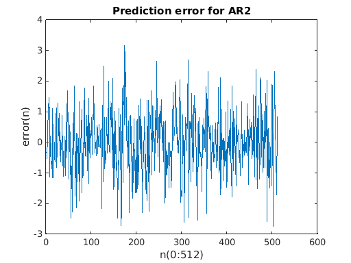
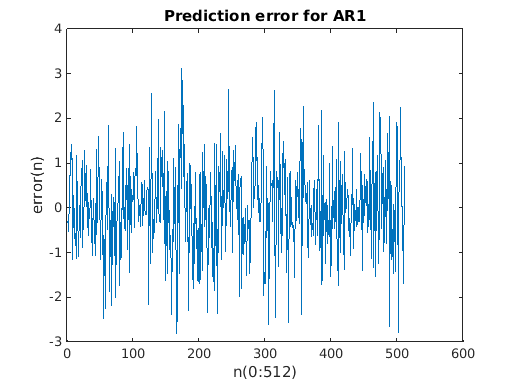
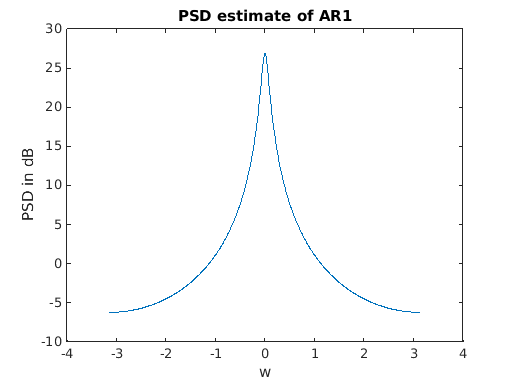
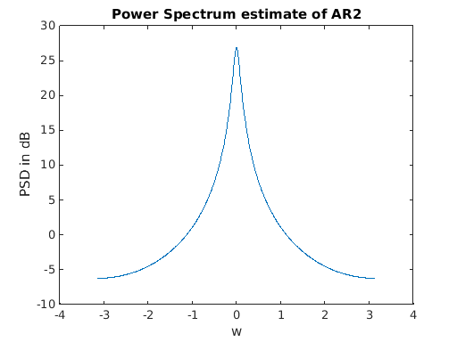
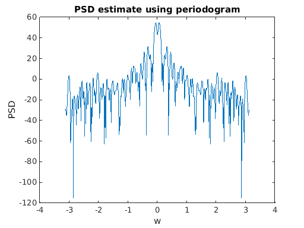

EE 779 : Assignment 2 | Q-1
Meet Pragnesh Shah, 13D070003
Contents
- (a) Obtaining the Correlation Toeplitz
- b) Yule-Walker Method for 2nd Order AR
- c) Prediction Error Signal and Variance
- d) First order linear predictive model
- e) 1st Order AR Power Spectral estimate
- e) 2nd Order AR Power Spectral estimate
- g) Power spectrum using best periodogram method | Blackman-Tuckey
- Comparison Study of spectrum estimates and analysis
close all; clear all;
(a) Obtaining the Correlation Toeplitz
x = getdata('../data/S01.DAT'); N = length(x); % AR model order = 2 as we are using a 3*3 corr matrix p = 2; r = zeros(p+1, 1); for i = 0:p, r(i+1) = x(1:N-i)*x(i+1:N)'/N; end x = x'; % Forming the toepltiz matrix toeplitz33 = [r(1) r(2) r(3); r(2) r(1) r(2); r(3) r(2) r(1)]; disp('The 3x3 Toeplitz matrix is :'); disp(toeplitz33);
The 3x3 Toeplitz matrix is :
7.8935 7.3366 6.8760
7.3366 7.8935 7.3366
6.8760 7.3366 7.8935
b) Yule-Walker Method for 2nd Order AR
From LP and solve for AR coeefs from Toeplitz matix entries and compute theoretical and prediction error variances
upper_block = toeplitz33(2:end,2:end); r_AR2 = -[r(2),r(3)]'; AR2_coeffs = inv(upper_block)*r_AR2; AR2_coeffs = [1,AR2_coeffs.']'; theoretical_AR2_variance = 0; for j = 1:p+1 theoretical_AR2_variance = theoretical_AR2_variance + AR2_coeffs(j)*conj(r(j)); end error_AR2 = sqrt(abs(theoretical_AR2_variance)); disp(['The theoretical variance for 2nd order model :', num2str(theoretical_AR2_variance)]); disp('2nd order AR model params:'); disp(AR2_coeffs);
The theoretical variance for 2nd order model :1.0714
2nd order AR model params:
1.0000
-0.8802
-0.0530
c) Prediction Error Signal and Variance
It compares quite well to the theoretical error variance.
prediction_error_AR2 = zeros(length(x),1); prediction_error_AR2 = AR2_coeffs(1)*x + (AR2_coeffs(2)*[0 x(1:end-1)'] + AR2_coeffs(3)*[0 0 x(1:end-2)'])'; prediction_AR2_variance = var(prediction_error_AR2); disp(['The prediction error variance for 2nd order model :', num2str(prediction_AR2_variance)]); figure; plot(prediction_error_AR2); title('Prediction error for AR2'); xlabel('n(0:512)'); ylabel('error(n)');
The prediction error variance for 2nd order model :1.0684
d) First order linear predictive model
We solve the YW equations from the upper (p-1)*(p-1) block of the toeplitz and solve for (order-1) AR model and obtain the model params and variances.
p = 1; toeplitz22 = toeplitz33(1:2,1:2); toeplitz22 upper_block = toeplitz22(2:end,2:end); r_AR1 = -[r(2)]'; AR1_coeffs = inv(upper_block)*r_AR1; AR1_coeffs = [1,AR1_coeffs.']'; theoretical_AR1_variance = 0; for j = 1:p+1 theoretical_AR1_variance = theoretical_AR1_variance + AR1_coeffs(j)*conj(r(j)); end error_AR1 = sqrt(abs(theoretical_AR1_variance)); % Variance in order 1 is more than that in order 2 (intuitive and obvious). disp(['The theoretical variance for 1st order model :', num2str(theoretical_AR2_variance)]); disp(['The theoretical variance for 2nd order model :', num2str(theoretical_AR1_variance)]); disp('1st order AR model params:'); disp(AR1_coeffs); prediction_error_AR1 = zeros(length(x),1); prediction_error_AR1 = AR1_coeffs(1)*x + (AR1_coeffs(2)*[0 x(1:end-1)'])'; error_sq_pred_AR1 = var(prediction_error_AR1); figure; plot(prediction_error_AR1); title('Prediction error for AR1'); xlabel('n(0:512)'); ylabel('error(n)');
toeplitz22 =
7.8935 7.3366
7.3366 7.8935
The theoretical variance for 1st order model :1.0714
The theoretical variance for 2nd order model :1.0744
1st order AR model params:
1.0000
-0.9295
 e) 1st Order AR Power Spectral estimate
We obtain the psd estimate from the AR model params
figure; [h,w] = freqz(error_AR1,[AR1_coeffs.'],'whole',1024); psd_AR1 = abs(fftshift(h)); freq = w - pi; plot(freq,10*log(psd_AR1)); title('PSD estimate of AR1'); xlabel('w'); ylabel('PSD in dB');
e) 2nd Order AR Power Spectral estimate
We obtain the psd estimate from the AR model params
figure; [h,w] = freqz(error_AR2,[AR1_coeffs.'],'whole',1024); psd_AR2 = abs(fftshift(h)); freq = w - pi; plot(freq,10*log(psd_AR2)); title('Power Spectrum estimate of AR2'); xlabel('w'); ylabel('PSD in dB');
g) Power spectrum using best periodogram method | Blackman-Tuckey
Using Bartlett Window of length 32
fft_len = 1024; N = 128; % zero padding signal x_padded = zeros(fft_len,1); x_padded(1:N) = x(1:N); fft_xN = fftshift(fft(x_padded, fft_len)); psd_prdgrm = (abs(fft_xN).^2)/N; figure; freq = linspace(-pi,pi,fft_len); plot(freq,10*log(psd_prdgrm)); title('PSD estimate using periodogram'); xlabel('w'); ylabel('PSD'); % Best method (Blacman Tukey) from Assignment 1 N = length(x); M = 32; fft_len = 1024; psd_bt = psd_blackman_tuckey(x, M, fft_len); figure; freq = linspace(-pi,pi,fft_len); plot(freq,10*log(psd_bt)); title('Power specctrum estimate using Blackman Tukey method'); xlabel('w'); ylabel('PSD in dB');

Comparison Study of spectrum estimates and analysis
The first order AR prediction gives one slightly wide peak. This is obvious from the fact that it can only model a single maxima.
The second order AR prediction shows 1 considerably narrow peak with lower signal prediction error variance. This is obvious from the fact that it can only model two maximas.
The periodogram shows a spectrum with many peaks due to rectangular windowing (with two major peaks near the actual maxima) This number of peaks cannot be modeled by an order-1 or order-2 AR model.
The Blackman-Tuckey method has one single relatively wider peak at the appropriate location and small wide insignificant crusts along the spectrum.